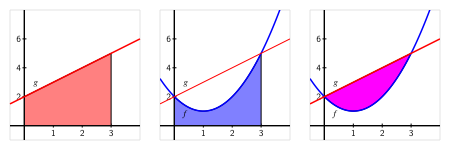
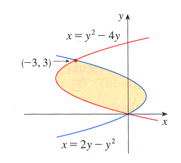
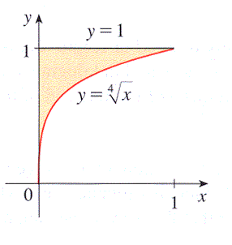

Section6.1Using Definite Integrals to Find Area and Length
Motivating Questions
How can we use definite integrals to measure the area between two curves?
How do we decide whether to integrate with respect to \(x\) or with respect to \(y\) when we try to find the area of a region?
How can a definite integral be used to measure the length of a curve?
Early on in our work with the definite integral, we learned that for an object moving along an axis, the area under a non-negative velocity function \(v\) between \(a\) and \(b\) tells us the distance the object traveled on that time interval, and that area is given precisely by the definite integral \(\int_a^b v(t) \, dt\text{.}\) In general, for any nonnegative function \(f\) on an interval \([a,b]\text{,}\)\(\int_a^b f(x) \, dx\) measures the area bounded by the curve and the \(x\)-axis between \(x = a\) and \(x = b\text{.}\)
Next, we will explore how definite integrals can be used to represent other physically important properties. In Preview Activity 6.1.1, we investigate how a single definite integral may be used to represent the area between two curves.
Preview Activity6.1.1.
Consider the functions given by \(f(x) = 5-(x-1)^2\) and \(g(x) = 4-x\text{.}\)
(a) Use algebra to find the points where the graphs of \(f\) and \(g\) intersect. (If more than one point, use a comma to separate them.)
Point(s):
(b) Use https://www.desmos.com/calculator 1 to accurately graph the functions \(f(x)\) and \(g(x)\text{.}\) Check to see if the points you found in part (a) are accurate.
(c) Find and evaluate exactly an integral expression, \(\int_a^b h(x)\ dx\text{,}\) that represents the area between \(y = f(x)\) and the \(x\)-axis on the interval between the intersection points of \(f\) and \(g\text{.}\)
\(a\) =
\(b\) =
\(h(x)\) =
\(\int_a^b h(x)\ dx\) =
(d) Find and evaluate exactly an integral expression, \(\int_a^b h(x)\ dx\text{,}\) that represents the area between \(y = g(x)\) and the \(x\)-axis on the interval between the intersection points of \(f\) and \(g\text{.}\)
\(a\) =
\(b\) =
\(h(x)\) =
\(\int_a^b h(x)\ dx\) =
(e) What is the exact area between \(f\) and \(g\) between their intersection points?
Answer:
Subsection6.1.1The Area Between Two Curves
In Preview Activity 6.1.1, we saw a natural way to think about the area between two curves: it is the area beneath the upper curve minus the area below the lower curve.
Example6.1.1.
Find the area bounded between the graphs of \(f(x) = (x-1)^2 + 1\) and \(g(x) = x+2\text{.}\)

Figure6.1.2.The areas bounded by the functions \(f(x) = (x-1)^2 + 1\) and \(g(x) = x+2\) on the interval \([0,3]\text{.}\)
In Figure 6.1.2, we see that the graphs intersect at \((0,2)\) and \((3,5)\text{.}\) We can find these intersection points algebraically by solving the system of equations given by \(y = x+2\) and \(y = (x-1)^2 + 1\text{:}\) substituting \(x+2\) for \(y\) in the second equation yields \(x+2 = (x-1)^2 + 1\text{,}\) so \(x+2 = x^2 - 2x + 1 + 1\text{,}\) and thus
We can also think of the area this way: if we slice up the region between two curves into thin vertical rectangles (in the same spirit as we originally sliced the region between a single curve and the \(x\)-axis in Section 4.2), we see (as shown in Figure 6.1.3) that the height of a typical rectangle is given by the difference between the two functions, \(g(x) - f(x)\text{,}\) and its width is \(\Delta x\text{.}\) Thus the area of the rectangle is
Figure6.1.3.The area bounded by the functions \(f(x) = (x-1)^2 + 1\) and \(g(x) = x+2\) on the interval \([0,3]\text{.}\)
The area between the two curves on \([0,3]\) is thus approximated by the Riemann sum
\begin{equation*}
A \approx \sum_{i=1}^{n} (g(x_i) - f(x_i)) \Delta x\text{,}
\end{equation*}
and as we let \(n \to \infty\text{,}\) it follows that the area is given by the single definite integral
\begin{equation}
A = \int_0^3 (g(x) - f(x)) \, dx\text{.}\tag{6.1.2}
\end{equation}
In many applications of the definite integral, we will find it helpful to think of a “representative slice” and use the definite integral to add these slices. Here, the integral sums the areas of thin rectangles.
Finally, it doesn’t matter whether we think of the area between two curves as the difference between the area bounded by the individual curves (as in (6.1.1)) or as the limit of a Riemann sum of the areas of thin rectangles between the curves (as in (6.1.2)). These two results are the same, since the difference of two integrals is the integral of the difference:
Our work so far in this section illustrates the following general principle.
If two curves \(y = g(x)\) and \(y = f(x)\) intersect at \((a,g(a))\) and \((b,g(b))\text{,}\) and for all \(x\) such that \(a \le x \le b\text{,}\)\(g(x) \ge f(x)\text{,}\) then the area between the curves is \(A = \int_a^b (g(x) - f(x)) \, dx\text{.}\)
Activity6.1.2.
In each of the following problems, our goal is to determine the area of the region described. For each region, (i) determine the intersection points of the curves, (ii) sketch the region whose area is being found, (iii) draw and label a representative slice, and (iv) state the area of the representative slice. Then, state a definite integral whose value is the exact area of the region, and evaluate the integral to find the numeric value of the region’s area.
The finite region bounded by \(y = \sqrt{x}\) and \(y = \frac{1}{4}x\text{.}\)
The finite region bounded by \(y = 12-2x^2\) and \(y = x^2 - 8\text{.}\)
The area bounded by the \(y\)-axis, \(f(x) = \cos(x)\text{,}\) and \(g(x) = \sin(x)\text{,}\) where we consider the region formed by the first positive value of \(x\) for which \(f\) and \(g\) intersect.
The finite regions between the curves \(y = x^3-x\) and \(y = x^2\text{.}\)
Subsection6.1.2Finding Area with Horizontal Slices
At times, the shape of a region may dictate that we use horizontal rectangular slices, instead of vertical ones.
Example6.1.4.
Find the area of the region bounded by the parabola \(x = y^2 - 1\) and the line \(y = x-1\text{,}\) shown at left in Figure 6.1.5.
Figure6.1.5.The area bounded by the functions \(x = y^2-1\) and \(y = x-1\) (at left), with the region sliced vertically (center) and horizontally (at right).
By solving the second equation for \(x\) and writing \(x = y + 1\text{,}\) we find that \(y+1 = y^2 - 1\text{.}\) Hence the curves intersect where \(y^2 - y - 2 = 0\text{.}\) Thus, we find \(y = -1\) or \(y = 2\text{,}\) so the intersection points of the two curves are \((0,-1)\) and \((3,2)\text{.}\)
If we attempt to use vertical rectangles to slice up the area (as in the center graph of Figure 6.1.5), we see that from \(x = -1\) to \(x = 0\) the curves that bound the top and bottom of the rectangle are one and the same. This suggests, as shown in the rightmost graph in the figure, that we try using horizontal rectangles.
Note that the width of a horizontal rectangle depends on \(y\text{.}\) Between \(y = -1\) and \(y = 2\text{,}\) the right end of a representative rectangle is determined by the line \(x = y+1\text{,}\) and the left end is determined by the parabola, \(x = y^2-1\text{.}\) The thickness of the rectangle is \(\Delta y\text{.}\)
and the area between the two curves on the \(y\)-interval \([-1,2]\) is approximated by the Riemann sum
\begin{equation*}
A \approx \sum_{i=1}^{n} [(y_i+1)-(y_i^2-1)] \Delta y\text{.}
\end{equation*}
Taking the limit of the Riemann sum, it follows that the area of the region is
\begin{equation}
A = \int_{y=-1}^{y=2} [(y+1) - (y^2-1)] \, dy\text{.}\tag{6.1.3}
\end{equation}
We emphasize that we are integrating with respect to \(y\text{;}\) this is because we chose to use horizontal rectangles whose widths depend on \(y\) and whose thickness is denoted \(\Delta y\text{.}\) It is a straightforward exercise to evaluate the integral in Equation (6.1.3) and find that \(A = \frac{9}{2}\text{.}\)
Just as with the use of vertical rectangles of thickness \(\Delta x\text{,}\) we have a general principle for finding the area between two curves, which we state as follows.
If two curves \(x = g(y)\) and \(x = f(y)\) intersect at \((g(c),c)\) and \((g(d),d)\text{,}\) and for all \(y\) such that \(c \le y \le d\text{,}\)\(g(y) \ge f(y)\text{,}\) then the area between the curves is
\begin{equation*}
A = \int_{y=c}^{y=d} (g(y) - f(y)) \, dy\text{.}
\end{equation*}
Activity6.1.3.
In each of the following problems, our goal is to determine the area of the region described. For each region, (i) determine the intersection points of the curves, (ii) sketch the region whose area is being found, (iii) draw and label a representative slice, and (iv) state the area of the representative slice. Then, state a definite integral whose value is the exact area of the region, and evaluate the integral to find the numeric value of the region’s area. Note well: At the step where you draw a representative slice, you need to make a choice about whether to slice vertically or horizontally.
The finite region bounded by \(x=y^2\) and \(x=6-2y^2\text{.}\)
The finite region bounded by \(x=1-y^2\) and \(x = 2-2y^2\text{.}\)
The area bounded by the \(x\)-axis, \(y=x^2\text{,}\) and \(y=2-x\text{.}\)
The finite regions between the curves \(x=y^2-2y\) and \(y=x\text{.}\)
Subsection6.1.3Finding the length of a curve
We can also use the definite integral to find the length of a portion of a curve. We use the same fundamental principle: we slice the curve up into small pieces whose lengths we can easily approximate. Specifically, we subdivide the curve into small approximating line segments, as shown at left in Figure 6.1.6.
Figure6.1.6.At left, a continuous function \(y = f(x)\) whose length we seek on the interval \(a = x_0\) to \(b = x_3\text{.}\) At right, a close up view of a portion of the curve.
We estimate the length \(L_{\text{slice} }\) of each portion of the curve on a small interval of length \(\Delta x\text{.}\) We use the right triangle with legs parallel to the coordinate axes and hypotenuse connecting the endpoints of the slice, as seen at right in Figure 6.1.6. The length, \(h\text{,}\) of the hypotenuse approximates the length, \(L_{\text{slice} }\text{,}\) of the curve between the two selected points. Thus,
Next we use algebra to rearrange the expression for the length of the hypotenuse into a form that we can integrate. By removing a factor of \((\Delta x)^2\text{,}\) we find
Then, as \(n \to \infty\) and \(\Delta x \to 0\text{,}\) we have that \(\frac{\Delta y}{\Delta x} \to \frac{dy}{dx} = f'(x)\text{.}\) Thus, we can say that
Taking a Riemann sum of all of these slices and letting \(n \to \infty\text{,}\) we arrive at the following fact.
Given a differentiable function \(f\) on an interval \([a,b]\text{,}\) the total arc length, \(L\text{,}\) along the curve \(y = f(x)\) from \(x = a\) to \(x = b\) is given by
\begin{equation*}
L = \int_a^b \sqrt{1+f'(x)^2} \, dx\text{.}
\end{equation*}
Activity6.1.4.
Each of the following questions somehow involves the arc length along a curve.
Use the definition and appropriate computational technology to determine the arc length along \(y = x^2\) from \(x = -1\) to \(x = 1\text{.}\)
Find the arc length of \(y = \sqrt{4-x^2}\) on the interval \(-2 \le x \le 2\text{.}\) Find this value in two different ways: (a) by using a definite integral, and (b) by using a familiar property of the curve.
Determine the arc length of \(y = xe^{3x}\) on the interval \([0,1]\text{.}\)
Will the integrals that arise calculating arc length typically be ones that we can evaluate exactly using the First FTC, or ones that we need to approximate? Why?
A moving particle is traveling along the curve given by \(y = f(x) = 0.1x^2 + 1\text{,}\) and does so at a constant rate of 7 cm/sec, where both \(x\) and \(y\) are measured in cm (that is, the curve \(y = f(x)\) is the path along which the object actually travels; the curve is not a “position function”). Find the position of the particle when \(t = 4\) sec, assuming that when \(t = 0\text{,}\) the particle’s location is \((0,f(0))\text{.}\)
Subsection6.1.4Summary
To find the area between two curves, we think about slicing the region into thin rectangles. If, for instance, the area of a typical rectangle on the interval \(x = a\) to \(x = b\) is given by \(A_{\text{rect} } = (g(x) - f(x)) \Delta x\text{,}\) then the exact area of the region is given by the definite integral
\begin{equation*}
A = \int_a^b (g(x)-f(x))\, dx\text{.}
\end{equation*}
The shape of the region usually dictates whether we should use vertical rectangles of thickness \(\Delta x\) or horizontal rectangles of thickness \(\Delta y\text{.}\) We want the height of the rectangle given by the difference between two curves: if those curves are best thought of as functions of \(y\text{,}\) we use horizontal rectangles, whereas if those curves are best viewed as functions of \(x\text{,}\) we use vertical rectangles.
The arc length, \(L\text{,}\) along the curve \(y = f(x)\) from \(x = a\) to \(x = b\) is given by
\begin{equation*}
L = \int_a^b \sqrt{1 + f'(x)^2} \, dx\text{.}
\end{equation*}
Exercises6.1.5Exercises
1.
Find the area enclosed between \(f(x) = 0.2 x^2 + 9\) and \(g(x) = x\) from \(x= -4\) to \(x= 5\text{.}\)
2.
Find the area of the region between \(y=x^{1/2}\) and \(y=x^{1/5}\) for \(0 \leq x \leq 1\text{.}\)
area =
3.
Find the area of the shaded region below.

Area =
4.
Find the area between \(y = 2 \sin x\) and \(y = 6 \cos x\) over the interval \(\left[0,\pi\right]\text{.}\) Sketch the curves if necessary.
\(A=\)
5.
The boundaries of the shaded region are the \(y\)-axis, the line \(y = 1\text{,}\) and the curve \(y=\sqrt[4]{x}.\)

This area can be computed in two different ways using integrals.
First, it can be computed as an integral with respect to x,
Find the area of the region between the curves \(4x+y^2=12\) and \(x=y\text{.}\)
These two curves intersect when \(y =\) and \(y =\) .
This is better to integrate with respect to y, since we know the starting value and ending value of y, and the region can be described with one integral,
Consider the curve defined by the equation \(y=4x^{2}+7x\text{.}\) Set up an integral that represents the length of curve from the point \((-2,2)\) to the point \((1,11)\text{.}\)
arclength = \(\int_c^d f(x)\, dx\text{,}\)
where \(c=\)\(d=\)\(f(x)=\)
8.
Find the arc length of the graph of the function \(f(x)=6 \sqrt{x^{3}}\) from \(x= 0\) to \(x=3\text{.}\)
arc length =
9.
Approximate the arc length of the curve \(y=\frac{1}{4}x^4\) over the interval \([1,2]\) using the trapezoidal rule and \(9\) intervals (i.e., \(T_{9}\)).
\(T_{9}=\)
10.
Find the exact area of each described region.
The finite region between the curves \(x = y(y-2)\) and \(x=-(y-1)(y-3)\text{.}\)
The region between the sine and cosine functions on the interval \([\frac{\pi}{4}, \frac{3\pi}{4}]\text{.}\)
The finite region between \(x = y^2 - y - 2\) and \(y = 2x-1\text{.}\)
The finite region between \(y = mx\) and \(y = x^2-1\text{,}\) where \(m\) is a positive constant.
11.
Let \(f(x) = 1-x^2\) and \(g(x) = ax^2 - a\text{,}\) where \(a\) is an unknown positive real number. For what value(s) of \(a\) is the area between the curves \(f\) and \(g\) equal to 2?
12.
Let \(f(x) = 2-x^2\text{.}\) Recall that the average value of any continuous function \(f\) on an interval \([a,b]\) is given by \(\frac{1}{b-a} \int_a^b f(x) \, dx\text{.}\)
Find the average value of \(f(x) = 2-x^2\) on the interval \([0,\sqrt{2}]\text{.}\) Call this value \(r\text{.}\)
Sketch a graph of \(y = f(x)\) and \(y = r\text{.}\) Find their intersection point(s).
Show that on the interval \([0,\sqrt{2}]\text{,}\) the amount of area that lies below \(y = f(x)\) and above \(y = r\) is equal to the amount of area that lies below \(y = r\) and above \(y = f(x)\text{.}\)
Will the result of (c) be true for any continuous function and its average value on any interval? Why?
You have attempted of activities on this page.
www.desmos.com/calculator
This integral is actually "improper" because the integrand is undefined at the endpoints, \(x = \pm 2\text{.}\) We will learn how to evaluate such integrals in Section 6.5.